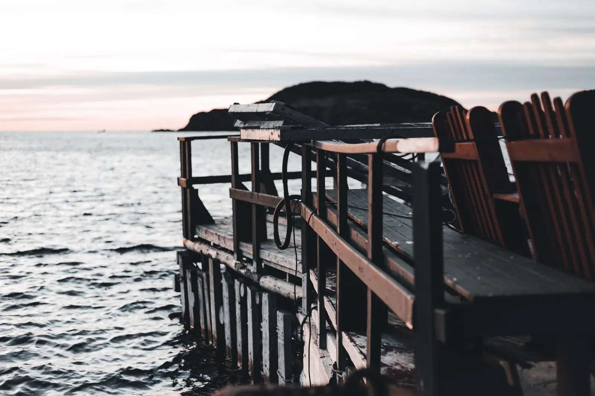

Jurerê ou Cacupé? praia de mar ou beira da baía.

Os dois bairros mais procurados por quem compra casa acima de R$ 3 milhões, lado a lado.
São os dois bairros que mais aparecem na lista de quem procura casa acima de R$ 3 milhões em Florianópolis. Parecem parecidos no anúncio, mas a vida em cada um é bem diferente.
Jurerê Internacional
Praia de mar aberto com água calma, loteamento planejado, ruas largas e segurança própria. Tem restaurantes, beach clubs e o Open Shopping a pé. No verão, o movimento triplica; para quem quer casa de temporada e vida social, é o lugar.
Cacupé
Casas espalhadas na encosta e na beira da baía, muitas com píer. Não tem praia de areia larga nem agito: tem silêncio, pôr do sol de frente e vizinhos discretos. É mais perto do Centro e do aeroporto que Jurerê.
| Jurerê Internacional | Cacupé | |
|---|---|---|
| Mar | Praia de areia, águas calmas | Baía, barco e remo |
| Movimento | Alto no verão | Baixo o ano todo |
| Até o Centro | 25 minutos | 20 minutos |
| Até o aeroporto | 36 minutos | 25 minutos |
| m² de exemplo | R$ 22.400 | R$ 18.600 |
Qual escolher
Se a família vive a praia e recebe muita gente, Jurerê. Se o sonho é acordar com a baía parada e ter o barco no píer, Cacupé. Nas duas, confira terreno de marinha e a regularidade do píer antes da proposta.